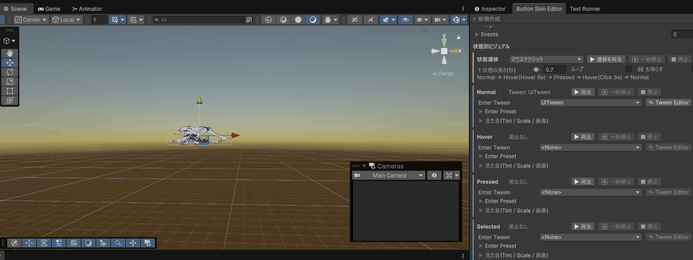
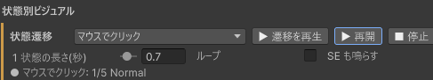
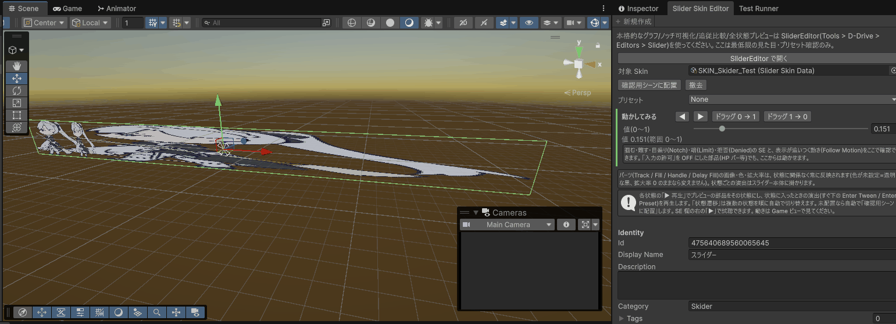
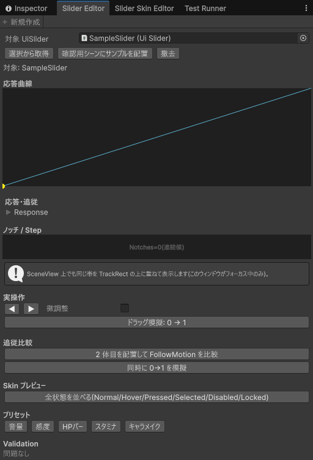

ボタン / スライダーの見た目(Skin)と Slider Editor
最終更新日: 2026-09-19
Skin（スキン）は、ボタンやスライダーの「見た目と音の着せ替え」をまとめたデータです。ボタン 1 個ずつに色や音を手で設定する代わりに、Skin を 1 つ作って全部のボタンに同じものを指しておけば、Skin を直すだけで全ボタンの操作感が同時に変わります。
- Button Skin: 6 つの状態ごとの「色・拡大率・差し替え画像・入ったときの演出」と、ホバー音・クリック音・長押し音・拒否音
- Slider Skin: 同じ 6 状態に加えて、掴む・離す・刻みを越える・端に当たる・拒否される、の 5 種類の操作音
- Slider Editor: スライダーの動き方（応答曲線・目盛り・追従）をグラフと帯で見ながら確かめるウィンドウ
6 つの状態と優先順位
| 状態 | いつ |
|---|
| Normal | 何もしていないとき |
| Hover | マウスが乗っているとき |
| Pressed | 押している最中 |
| Selected | パッド / キーボードでフォーカスが当たっているとき |
| Disabled | いまは押せない（グレーアウト） |
| Locked | 解放されていない（鍵付き） |
複数が同時に当てはまるときは Locked > Disabled > Pressed > Hover / Selected > Normal の順で強いものが表示されます。どの状態も未設定なら白・等倍で普通に見えます。
Canvas への当て方
- Asset Browser の「新規」ボタンで種別に ControlSkin (ButtonSkinData) または ControlSkin (SliderSkinData) を選んで作る（接頭辞
SKIN、Ui/Skin フォルダに置かれます）
- Canvas の Prefab の中にある UiButton / UiSlider の「SkinId」にその Skin を設定する（Canvas Editor）
- SkinId が空のボタンは、レイヤーの既定 Skin（UiLayerSettings）が自動で使われます。プロジェクト共通の Skin はここに入れておくと楽です
Button Skin

Button Skin Editor。確認用シーンに配置したボタンを見ながら調整する
開き方
- Project で Button Skin を選び、Inspector の一番上の「▶ Skin Editor で開く」を押す
- またはメニューバー
Tools > D-Drive > Editors > Button Skin。Project で Button Skin を選んでいればそれが対象になります
- まだ無ければ、ツールバーの「＋ 新規作成」ボタンでその場で作れます
画面の説明
| 要素 | 説明 |
|---|
| 対象 Skin | 編集する Button Skin |
| 確認用シーンに配置 | 開いているシーンに [D-Drive] Button Skin Preview という Canvas を作り、その下に 200×60 のボタンを置いてこの Skin を当てます。シーンには保存されません。すでに置いてあれば作り直します。エディタを閉じたとき・別のシーンに移ったときは自動で片付きます |
| 撤去 | [D-Drive] Button Skin Preview を消します（他のエディタのプレビューは消しません） |
| 設定欄 | Skin の全項目を編集（Ctrl+Z 可）。対象が無いと「Skin を選択してください」。確認用のボタンは、その設定のすぐ横に付いています（下の 2 行） |
| 状態ごとの箱（Normal〜Locked） | 見出しの行に、その状態で再生される演出（「Tween: 名前」/「Preset: 名前」/「演出なし」）と「▶ 再生」「⏸ 一時停止」（再開）「■ 停止」。すぐ下が演出の設定欄（Enter Tween / Enter Preset）で、Enter Tween の右に「✎ Tween Editor」があります。色・拡大率・画像は「見た目(Tint / Scale / 画像)」を開くと出ます。
「▶ 再生」= プレビューのボタンをその状態にし（色・拡大率・差し替え画像）、状態に入ったときの演出を実際に再生します。未配置なら自動で「確認用シーンに配置」します。動きは Game ビューで見ます。
「⏸」「■」は再生中の箱だけ押せます。「✎ Tween Editor」は Enter Tween を指定しているときだけ押せ、UI Tween Editor がプレビューのボタンを対象にした状態で開きます |
| SE の欄 | Hover / Click / Long Press / Denied の各欄の右に「▶」（試聴）「■」（停止）。未設定の欄は押せません。SE データに音（Clip）が 1 つも入っていないと「再生できませんでした(Clip 未設定など…)」と出ます。Enter Preset に SE を付けている場合は、状態の「▶ 再生」でもその SE が鳴ります |
| 状態遷移（オレンジの線の箱） | 「状態別ビジュアル」の先頭にあります。遷移の種類（マウスでクリック / パッドで選んで決定 / 押せないボタンを押す / ロック中のボタンを押す / 全状態を順に）を選んで「▶ 遷移を再生」を押すと、プレビューのボタンが順に状態を切り替えます。画像の差し替え・色・演出・SE が実際の操作と同じ順で確認できます（例: Hover に入ると Hover Se、押して離すと Click Se）。「1 状態の長さ(秒)」で 1 段の時間、「ループ」で繰り返し、「SE も鳴らす」で音の有無。下に今の段（例「● マウスでクリック: 3/5 Pressed」）が出ます |
| 当たり判定を表示 | 「Hit Area Expand」の下にあります。ON にすると、プレビューのボタンに押せる範囲が赤い半透明で重なります（Game / Scene ビュー）。Scene ビューでは赤い枠の四辺の小さな四角をドラッグして広げ / 狭められます（Ctrl+Z 可） |

状態遷移。今どの状態を再生しているかが表示される
「▶ 再生」は 1 つの状態を強制的に見せる確認用です。状態の切り替わり（マウスを乗せる→押す→離す）の流れは、Game ビューで実際に操作して確かめてください。
設定項目（状態別ビジュアル: Normal / Hover / Pressed / Selected / Disabled / Locked）
| 項目 | 説明 |
|---|
| Tint | その状態のときの色。ボタン側の「TargetGraphic」に掛かります |
| Scale | 拡大率。「Mode = Constant」で数字を入れるのが基本（押したとき 0.95 など） |
| Override Sprite | その状態で差し替える画像。Normal に入れると Asset Browser のアイコンにもなります |
| Enter Tween | この状態に入った瞬間に再生する演出（UI Tween のデータ）。設定があれば Enter Preset より優先 |
| Enter Preset | Enter Tween が空のときに使う既成の演出。Preset = None なら何も再生しません（例: Pressed に PunchScale） |
| Anim Frames / Anim Fps / Anim Loop | スプライトアニメ。その状態のあいだ、コマ画像を順に切り替えます（Override Sprite より優先）。Anim Fps = 1 秒あたりのコマ数（0 以下は 12）、Anim Loop = 最後のコマから最初に戻る（OFF なら最後のコマで止まる）。「見た目」の中の「Anim2D から読み込む」に Anim2D データを入れて「コマを読み込む」を押すと、コマ・コマ数/秒・ループをまとめて取り込めます（コマ数/秒はクリップの長さとコマの並びから求めます。コマの間隔が不揃いなクリップは、平均の速さになる旨の警告が出ます） |
| Scroll Speed | スクロールアニメ。画像を流す速さ（X = 横、Y = 縦。1 秒あたりに画像の何枚分動くか。0 = 無効）。縞模様が流れるボタンなどに。画像のインポート設定で Wrap Mode を Repeat にし、Sprite Atlas には入れないでください。スクロールに必要な Scroll Material が空だと、Skin Editor の上に警告と「既定のマテリアルを設定」ボタンが出るので押してください（Ctrl+Z で戻せます）。ゲームがポーズ中（時間停止中）でもスクロールは止まりません |
設定項目（SE）
| 項目 | 説明 |
|---|
| Hover Se | マウスが乗ったときの音（任意）。パッドでフォーカスが来た（Selected）ときも鳴ります |
| Click Se | クリックしたときの音 |
| Long Press Se | 長押しが成立したときの音 |
| Denied Se | Disabled / Locked のボタンを押したときの「ブッ」という拒否音 |
SE が空のボタンは、レイヤーの既定 SE（UiLayerSettings）が鳴ります。SE の作り方は SE の設定項目。
設定項目（当たり判定）
| 項目 | 説明 |
|---|
| Hit Area Expand | 押せる範囲を見た目より広げる（+）/ 狭める（−）。X = 左、Y = 下、Z = 右、W = 上 の各辺をピクセルで指定します（例: 小さいアイコンボタンを押しやすくするなら 4 辺とも 10）。ボタン側の Target Graphic に掛かります。Prefab の画像に Raycast Padding を手で設定してある場合は、その値に足されます（手設定は消えません。Skin を外すと手設定に戻ります）。「当たり判定を表示」で範囲を見ながら調整できます |
| Alpha Hit Threshold | 画像の透明な部分を押せなくする。0 = 無効、0.5 なら不透明度 50% 未満のピクセルは押しても反応しません（丸いボタンの四隅など）。画像のインポート設定で Read/Write を ON にし、Sprite Atlas には入れないでください。読めない画像だと透明判定をせず、全面が押せるまま警告が出ます。エディタの確認用シーンでは実際に押せないため、効き目はゲーム実行中に確かめます |
| Scroll Material | スクロールアニメ用のマテリアル（DDrive/UI/Scroll）。Scroll Speed を使う状態があるのに空だと、Skin Editor に「既定のマテリアルを設定」ボタンが出ます。押すと既定の DDrive_UI_Scroll が入ります（自動では入りません。開いただけでデータが変わらないように）。空のままだとスクロールせず警告が出ます |
状態の画像（Override Sprite / コマ）を持たない状態に戻ると、ボタンは元の画像に戻ります。Skin Editor で設定を変えると、配置済みのプレビューにすぐ反映されます（演出や遷移の再生中は、次の再生で反映）。
ボタン側（UiButton）の項目
Skin ではなく、Prefab の中の UiButton にある項目です。押し方の判定を決めます。
| 項目 | 説明 |
|---|
| Target Graphic | Tint / Override Sprite を掛ける画像。空だと見た目の変化は Scale だけになります |
| Skin Id | 使う Skin。空ならレイヤー既定 |
| Long Press Sec | この秒数押し続けると長押しになる（既定 0.5、0 = 無効） |
| Repeat Interval Sec | 長押し後、押しっぱなしでこの間隔ごとに繰り返し発火（既定 0.1、0 = 無効） |
| Double Click Sec | この秒数以内の 2 回目をダブルクリック扱い（既定 0.3、0 = 無効。単発クリックが即時に発火） |
| Cooldown Sec | 発火後に反応しない時間（既定 0.15、0 = 無効）。連打対策 |
| Block Double Fire | 同じフレームに複数のボタンが同時に発火するのを防ぐ |
よくある使い方
| やりたいこと | 設定 |
|---|
| プロジェクト共通の標準ボタン | Skin を 1 つ作り、全 Canvas の UiButton の Skin Id に指す（またはレイヤー既定に） |
| 押し込み感 | Pressed の Scale を Constant 0.95 |
| 跳ねる押し心地 | Pressed の Enter Preset = PunchScale |
| 押せないことを伝える | Disabled の Tint をグレー、Denied Se に「ブッ」 |
| パッドのフォーカス位置を目立たせる | Selected の Tint を Hover とは別の色に |
| 危険な操作（削除など）だけ赤に | 赤系の Skin を別に作り、そのボタンだけ Skin Id を差し替え |
よくある警告
| 表示 | 対処 |
|---|
| 全状態の Tint.a が 0 です(何も描画されません) | どれか 1 つの状態でも Tint の透明度（A）を上げる |
| ClickSe が未設定です | 情報のみ。クリック音を付けるか、レイヤー既定 SE に任せる |
| AlphaHitThreshold が有効ですが、… の Override Sprite '…' の画像が Read/Write 無効です(透明部分の判定が効かず、全面が押せます) | その画像のインポート設定で Read/Write を ON にする（Sprite Atlas からも外す）。透明判定が要らなければ Alpha Hit Threshold を 0 に |
| ButtonWire[…] '…': Trigger=LongPress なのに対象 UiButton の LongPressSec が 0 以下です | Canvas 側の警告。ボタンの Long Press Sec を 0 より大きく |
| ButtonWire[…] '…': CooldownSec=0 の状態で OpenCanvas に配線されています | 連打で画面が多重に開くおそれ。Cooldown Sec を入れる |
Slider Skin

Slider Skin Editor。Track / Fill / Handle の見た目を確認しながら調整する
開き方
- Project で Slider Skin を選び、Inspector の「▶ Skin Editor で開く」（見た目と音）または「▶ Slider Editor で開く」（動き方。下記）
- またはメニューバー
Tools > D-Drive > Editors > Slider Skin
- まだ無ければ、ツールバーの「＋ 新規作成」ボタンでその場で作れます
画面の説明
| 要素 | 説明 |
|---|
| 案内ラベル / SliderEditor で開く | グラフや目盛りの確認は Slider Editor の担当です。ボタンで対象 Skin を渡して開けます |
| 対象 Skin | 編集する Slider Skin |
| 確認用シーンに配置 / 撤去 | [D-Drive] Slider Skin Preview Canvas の下に 300×24 のスライダー（Fill と 20×24 の Handle 付き）を置いて Skin を当てます。エディタを閉じたとき・別のシーンに移ったときは自動で片付きます |
| プリセット | 音量 / 感度 / HPバー / スタミナ / キャラメイク。選んだ瞬間に配置中のプレビュースライダーの動き方が変わります（Skin 自体は変わりません）。先に「確認用シーンに配置」していないと何も起きません |
| 動かしてみる（緑の線の箱） | プレビューのスライダーを実際に動かして確かめます（未配置なら自動で配置）。「◀」「▶」= キーボード / パッド 1 回分、「ドラッグ 0 → 1 / 1 → 0」= マウスで端から端まで掴んで動かす操作、「値(0〜1)」= ゲームのコードから値を変えたとき（HP の増減など）と同じ動き。つまみ・バーの動き、表示が追いつく動き（Follow Motion）、掴む・離す・目盛り・端・拒否の SE が確認できます。下に現在の値と直前の出来事（「目盛り 2」「端(Max)」など）が出ます。入力の許可を OFF にした部品でも、ここからは動かせます |
| 設定欄（状態ごとの箱 / SE の欄） | Button Skin と同じです（状態ごとの箱の「▶ 再生」「⏸」「■」、Enter Tween の右の「✎ Tween Editor」、SE は Grab / Release / Notch / Limit / Denied の各欄の右に「▶」「■」）。演出はスライダー本体に掛かります。パーツ（Track / Fill / Handle / Delay Fill）の画像・色・拡大率は常に反映されます（状態ごとの演出は無いので再生ボタンはありません）。「状態遷移」（マウスで掴んで離す / パッドで選ぶ / 押せないスライダーを触る / 全状態を順に）と「当たり判定を表示」も Button Skin と同じです。対象が無いと「Skin を選択してください」 |
設定項目
| 項目 | 説明 |
|---|
| 状態別ビジュアル（6 状態） | Button Skin と同じ。Tint / Scale / Override Sprite / Enter Tween / Enter Preset |
| パーツ: Track / Fill / Handle / Delay Fill | 溝 / 値ぶん伸びるバー / つまみ / ダメージ表現用の「白い遅延バー」の見た目。画像（Override Sprite）・色（Tint）・拡大率（Scale）が反映されます（2026-09-14 から。状態に関係なく常にこの見た目）。色が未設定（透明な黒のまま）・拡大率 0 のままなら、その項目は変えません。Track がスライダー本体の画像と同じ部品なら、色は状態が決め、Track の画像は状態に画像が無いときだけ使われます |
| Notch Sprite | 目盛り位置に並べる飾り画像（任意）。いまはアイコンにだけ使われます |
| Hide Handle On Gamepad | パッド操作時につまみを隠す。まだ効きません |
| Hit Area Expand / Alpha Hit Threshold | Button Skin と同じ（上の「設定項目（当たり判定）」）。スライダー本体（Track）の画像に掛かります |
| Extra Hit Padding | タッチ用に掴める範囲を広げる。X = 左右、Y = 上下の幅で、Hit Area Expand に足されて効きます（2026-09-14 から有効） |
| Handle Hit Area Expand | つまみ（Handle）の押せる範囲を四辺ごとに広げる（+）/ 狭める（−）。X = 左、Y = 下、Z = 右、W = 上（ピクセル）。スライダーの Handle Rect の画像に掛かります。小さいつまみを掴みやすくしたいときに。「当たり判定を表示」で青い枠として見え、Scene ビューでドラッグ調整できます |
| Grab Se / Release Se | 掴んだ瞬間 / 離した瞬間の音 |
| Notch Se | 目盛り（ノッチ = 刻み）を越えたときの「カチッ」 |
| Notch Se Min Interval Sec | 速くドラッグしても Notch Se が詰まらないようにする最小間隔（既定 0.04 秒） |
| Limit Se | 端に当たったときの音 |
| Denied Se | Disabled / Locked のときに触ったときの拒否音 |
| Notch Haptic Id / Limit Haptic Id | 振動（触覚）の ID（数値）。振動データを選び、Inspector 上部の Identity 欄にある Id の数値をコピーしてここへ貼り付けると、目盛りを越えた・端に当たったときにパッドが振動する（2026-09-14 から対応。ID 選択用のドロップダウンはまだ無く、数値を直接入力する） |
よくある警告
| 表示 | 対処 |
|---|
| NotchSeMinIntervalSec が負数です | 0 以上にする（0.04 前後） |
| AlphaHitThreshold が有効ですが、… の画像が Read/Write 無効です… | Button Skin と同じ。画像の Read/Write を ON に |
| 全状態の Tint.a が 0 です(何も描画されません) | どれかの状態の Tint の透明度を上げる |
既知の制限: Notch Sprite、Hide Handle On Gamepad はまだ実行時に効きません。パーツ（Track / Fill / Handle / Delay Fill）の画像・色・拡大率は 2026-09-14 から反映されます（状態ごとの切り替えはありません）。音（SE）と触覚 ID（振動）は効きます。
Slider Editor（スライダーの動き方を見る）
音量・感度・HP バー・スタミナ・キャラメイクなど「連続した値を触らせる」部品が UiSlider です。パッド操作・長押しリピート・微調整・目盛り吸着・応答曲線をはじめから持っています。Slider Editor は、その設定をグラフと帯で見ながら試すウィンドウです。

Slider Editor。応答曲線・ノッチの帯・実操作ボタン
開き方
- メニューバー
Tools > D-Drive > Editors > Slider。Hierarchy で UiSlider の付いたオブジェクトを選んでいればそれが対象
- または Slider Skin の Inspector の「▶ Slider Editor で開く」。この経路だと、その Skin を当てたサンプルが自動で確認用シーンに置かれます
ツールバーの「＋ 新規作成」ボタンを押すと、新しい Slider Skin データが作られ、その Skin を当てたサンプルスライダーが確認用シーンに自動で配置されます（対象はアセットではなくシーン上の UiSlider なので、「作成」の結果は「新しい Skin のサンプルが目の前に出る」という形になります）。
対象はアセットではなく
シーン上の UiSliderです。実際のスライダーは Canvas の Prefab の中に置き、
Canvas データの Sliders で配線します。
画面の説明
| 要素 | 説明 |
|---|
| 対象 UiSlider / 選択から取得 / 確認用シーンにサンプルを配置 / 撤去 | 対象の選択。状態行に「UiSlider を選択してください」または「対象: 名前」 |
| (a) 応答曲線 | 横軸 = つまみの位置、縦軸 = 値。薄い対角線 = まっすぐ（線形）の目安、水色の曲線 = いまの Response、黄色い点 = 現在のつまみ位置と値。曲線が対角線より下にたわんでいれば「左側で細かく動く」、上なら「右側で細かく」です。直下で Response を編集できます |
| (b) ノッチ / Step | 目盛りの帯。白い縦線 = 目盛り位置（両端を含めて Notches+1 本）、黄色い半透明の帯 = 吸着が効く幅（Snap Threshold）、シアンの点 = 現在値。Notches = 0 なら「Notches=0(連続値)」。このウィンドウがフォーカス中は、SceneView の Track の上にも同じ帯が重なります |
| (c) 実操作 | 「◀」「▶」= パッド左右 1 回分（シーン上の実物なら、つまみ・バーの位置まで Ctrl+Z で戻せます）。「微調整」ON で移動量が Fine Step Multiplier 倍。「ドラッグ模擬: 0 → 1」で 20 段階の実際のドラッグを再現（確認用サンプルだけ。シーン上の実物のスライダーでは理由を表示して動かしません。実物を記録なしに書き換えないため）。下のログに Changed / NotchPassed / LimitReached / Commit が並び、Skin に設定した掴む・離す・目盛り・端・拒否の SE も鳴ります（Slider Skin の「Slider Editor で開く」から開いた場合、または対象の Skin Id が設定されている場合） |
| (d) 追従比較 | 「2 体目を配置して FollowMotion を比較」で右に 2 体目（Follow Motion だけ OutBack / 0.4 秒 / Once に変えたもの）を置き、「同時に 0→1 を模擬」で並べて比べます。2 体目の Follow Motion はその場で編集可 |
| (e) Skin プレビュー | 「全状態を並べる」で Normal / Hover / Pressed / Selected / Disabled / Locked の 6 本を横に並べ、対象の Skin の見た目を各状態に固定します。Skin は対象の Skin Id、無ければ「Slider Editor で開く」で開いたときの Slider Skin を使います。どちらも無い（メニューからサンプルを置いた）と 6 本とも同じ見た目 |
| (f) プリセット | 下の表の 5 種。対象の値・刻み・応答・追従をまとめて書き換えます（Ctrl+Z 可） |
| (g) Validation | 下の「UiSlider の警告」。問題なければ「問題なし」 |
プリセット
| 名前 | 範囲 / Step / Notches | 応答 / 追従 | 見え方 |
|---|
| 音量 | 0〜1 / 0 / 0 | InQuad / 即時 | つまみの下側で細かく動く（聴こえ方に合う） |
| 感度 | 0.1〜5 / 0 / 0 | OutQuad / 変更なし | 低い側を細かく |
| HPバー | 0〜100 / 1 / 0 | 線形 / OutCubic 0.25 秒 Once | 表示が 0.25 秒かけて滑らかに減る。入力の許可が 2 つとも OFF（プレイヤーは触れない表示専用）。他のプリセットに切り替えると ON に戻ります |
| スタミナ | 0〜100 / 1 / 4（Snap Threshold 0.03） | 線形 / 変更なし | 4 分割の目盛りに吸い付く |
| キャラメイク | 0〜10 / 1 / 10（Whole Numbers ON） | 線形 / 変更なし | 0〜10 の整数 11 段階 |
Slider Editor はシーン上の実物を動かしません。追従アニメや見た目の更新は Ctrl+Z で戻せない書き換えなので、「確認用シーンにサンプルを配置」で作ったサンプルだけを駆動します。実物を対象に選ぶと「シーン上の実物は駆動しません(「確認用シーンに配置」したサンプルを使ってください)」と出ます。パッド操作とプリセット適用は Ctrl+Z で戻せます。
UiSlider の設定項目
| 項目 | 説明 |
|---|
| 値: Min / Max | 値の範囲（既定 0〜1） |
| 刻み: Step | 値の最小刻み。0 = 連続値 |
| 刻み: Whole Numbers | ON で値を必ず整数に丸める |
| 刻み: Notches | 目盛りの分割数。0 = 目盛り無し。4 なら 0 / 25 / 50 / 75 / 100 の 5 点に吸着し、Notch Se が鳴ります。キーボード / パッド / ホイールで 1 回動かしても吸着で元の目盛りに戻ってしまう設定のときは、隣の目盛りまで進みます（スタミナなら 1 回で 25） |
| 刻み: Snap Threshold | 目盛りにどれだけ近づいたら吸い付くか（全長を 1 とした幅。既定 0.02） |
| 入力: Direction | LeftToRight / RightToLeft / BottomToTop（縦ゲージ）/ TopToBottom |
| 入力: Jump On Track Click | ON = 溝を直接押した位置へ即ジャンプ。OFF = 1 Step だけ動く（Step = 0 なら範囲の 10%） |
| 入力: Pad Step Amount | パッド左右 1 回の移動量（値の単位。既定 0.05） |
| 入力: Pad Repeat Delay Sec / Pad Repeat Interval Sec | 押しっぱなしでリピートが始まるまでの秒数（0.4）/ リピート中の間隔（0.06） |
| 入力: Fine Step Multiplier | 微調整の修飾キー中の倍率（既定 0.2 = 5 分の 1 の速さ） |
| 入力: Wheel Enabled | マウスホイールで 1 Step 動かせるか |
| 入力: Escape On Limit | ON = 端に到達したときだけ左右キーでフォーカスが隣へ抜ける。OFF だと左右キーはスライダーに吸われ続けます |
| 入力の許可: Pointer Input | マウス / タッチ（ドラッグ・溝のクリック・ホイール・ホバー）で操作できるか（既定 ON）。HP バーなど表示専用なら OFF。OFF でもゲームのコードから値を変えるのは効きます。操作の途中（ドラッグ中など）で OFF にしても、指を離す・カーソルが外れるは受け付けるので、押されたまま残りません。クリックを後ろへ通したいときは、画像側の Raycast Target も OFF にしてください |
| 入力の許可: Navigation Input | キーボード / パッド（十字キー・スティック）で値を操作できるか（既定 ON）。OFF にするとフォーカスも受けず、パッドのフォーカス移動で飛ばされます |
| 応答: Response | つまみの位置（0〜1）と値（0〜1）の関係。未設定 = まっすぐ。右肩上がりでないと Error |
| 追従: Follow Motion | 表示が実際の値に追いつく動き。未設定 = 即時。HP バーの「じわっと減る」に |
| 追従: Delay Follow Motion | 白い遅延バー（Delay Fill）専用の追従。未設定なら Follow Motion と同じ |
| 通知: Change Throttle Sec | 値の通知をこの秒数間隔に間引く（0 = 毎フレーム） |
| 通知: Notify Only On Commit | ON = ドラッグを離したときだけ通知 |
| ビジュアル: Track Rect / Fill Rect / Handle Rect / Delay Fill Rect | 溝 / バー / つまみ / 遅延バーの RectTransform（任意） |
キー入力と Direction: 十字キー / パッドの右・上とマウスホイールは、Direction に関係なく常に値を増やします。マウスやタッチのドラッグだけが Direction どおりの向きです（仕様）。
よくある警告（UiSlider）
| 表示 | 対処 |
|---|
| …: Min(…) が Max(…) 以上です | Min を Max より小さく |
| …: Response が単調増加ではありません(つまみ位置が一意に決まりません) | 応答曲線を右肩上がりに描き直す |
| …: Step が (Max-Min) を割り切れません(端に到達できない刻みです) | 0〜100 なら Step を 1 / 2 / 5 / 10 などに |
| …: Notches(…) と Step から求まる分割数(…)が一致しません | Notches = (Max−Min) ÷ Step に合わせるか、どちらかを 0 に |
| …: WholeNumbers=true なのに Step(…)が非整数です | Step を整数に |
| …: FollowMotion が Loop 設定です(表示値が収束しません) | Follow Motion の Loop を Once に |
よくある使い方
| やりたいこと | 設定 |
|---|
| 音量スライダー | 「音量」プリセット → Canvas データの Sliders で Action = SetOption、Option = MasterVolume（標準オプション） |
| HP バー | 「HPバー」プリセット（入力の許可が OFF になり、プレイヤーは触れません）+ Delay Fill Rect に白いバー + Delay Follow Motion をさらに遅く。白いバーの色・画像は Slider Skin の Delay Fill（Tint / Override Sprite）で |
| つまみを掴みやすく | Slider Skin の Handle Hit Area Expand を 4 辺とも 8〜12 程度に（「当たり判定を表示」の青い枠で確認） |
| 画質 低 / 中 / 高 / 最高 の 4 段階 | Notches = 3 にして Step を合わせ、Skin の Notch Se で「カチッ」 |
| 重い処理につなぐ（読み込みなど） | Notify Only On Commit ON、または Change Throttle Sec = 0.1 |
| 縦ゲージ | Direction = BottomToTop、Fill Rect を縦に伸びるアンカーに |
| パッドで一覧の中にスライダーを置く | Escape On Limit ON（端に着いたら隣の項目へ抜けられる） |
| 設定画面の共通スライダー | Slider Skin を 1 つ作り、音量・感度・明るさで共用 |
注意点
- 確認用のプレビューはエディタごとに別の名前（
[D-Drive] Button Skin Preview / [D-Drive] Slider Skin Preview / [D-Drive] UI Tween Preview）で置かれ、エディタを閉じたとき・別のシーンに移ったときに自動で片付きます。シーンには保存されません。万一画面に消えないプレビューが残ったら Tools > D-Drive > Debug > 確認用プレビューの残骸を掃除
- Tint と Override Sprite はボタン / スライダー側の Target Graphic が空だと効きません
- Slider Skin の Notch Sprite・Hide Handle On Gamepad はまだ効きません（パーツの画像・色・拡大率・触覚 ID は効きます）（上の「既知の制限」）
- Bgm / Se / Voice の個別音量はまだ音に接続されていません（Master Volume と Ui Speed Scale は効きます）
- 「全状態を並べる」の見た目は、対象の Skin Id、無ければ「Slider Editor で開く」で開いたときの Slider Skin を使います。メニューからサンプルを置いただけだと 6 本とも同じに見えます
関連ページ